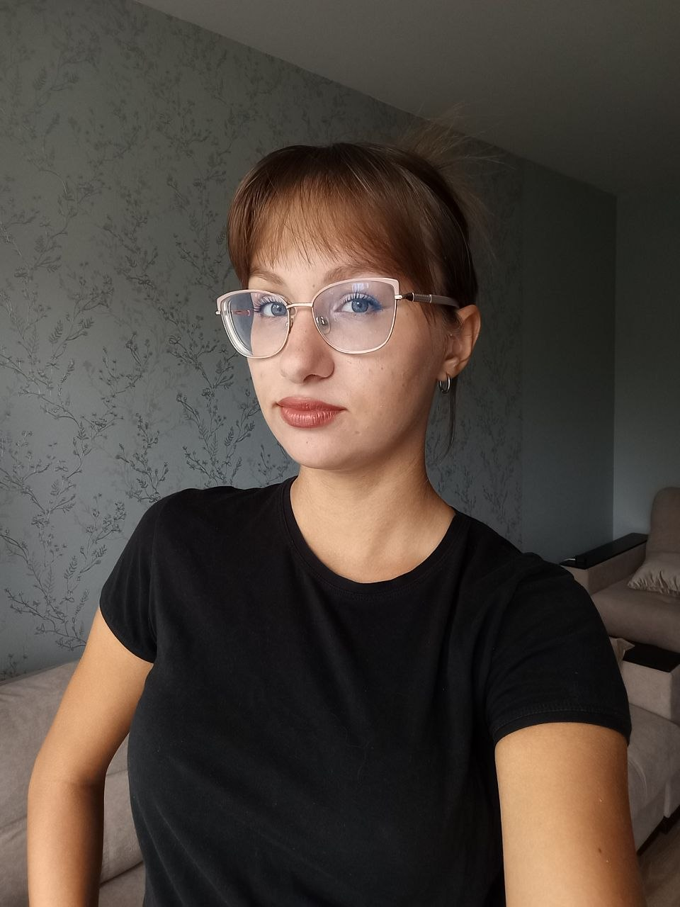

Шанькова
Ульяна
КМиСА / Системный аналитик
«Ни у кого ничего не просите. Ничего, ни у кого. В особенности у тех, кто сильнее вас. Они сами придут и вам все предложат»
КМиСА / Системный аналитик
«Ни у кого ничего не просите. Ничего, ни у кого. В особенности у тех, кто сильнее вас. Они сами придут и вам все предложат»
